How to build a space glider with extrusion (not difficult)
First a few informations to read
On some systems (Linux KDE/Gnome and SGI IRIX 4dwm), there is a
program icon fuer "dune4kids", it looks something like this:


On systems like Micro$oft Windows or MacOSX there is only one (other)
programm icon:


Normally, the program of this icon starts with the english full version,
usually with very much icons and too much menues.

In this case, you have to switch to dune4kids.
You have to
click here to switch to the right version.

What to do, if the program crashes ?
With a bit of luck, you can load the last situation, if there is a
new ".dune_crash" file in the list of recent files.

Navigation
Navigation means the movment in the 3D modell.
This is important, cause it can happen very easily, that you get inside or
behind your peace of work and see therefore nothing.
When you see nothing there are two way to continue, ofthen you use this
ways together:
- Move backwards
You can go forwards and backwards, if you press together the
left mouse button and the "Shift" key on the keyboard and move the
mouse up and down.
If you use "Examine" (when the icon  is pressed)
this also works with the middle button of a 3-button mouse.
If there is a mouse with a scroll wheel, you have to press the mouse
wheel.
is pressed)
this also works with the middle button of a 3-button mouse.
If there is a mouse with a scroll wheel, you have to press the mouse
wheel.
- Turn the 3D world
If you press both the left mouse button and the "Control" key on the
keyboard and then move the mouse, the whole 3D world turns around.
Usually this is used to look all sides of a object, but als helps
if you are into the void.
Then content could be not only behind, but also left, right, up or
down.
You may need to turn around a lot to find your object.
Additionally there you can press together the left mouse button, the "Shift"
key and the "Control" key and move the mouse (or use the icon
 ). This results in the movement in direction
of the screen plane: up, down, left and right.
). This results in the movement in direction
of the screen plane: up, down, left and right.
After you find the object and moved near to it, you should press again the
"Examine" icon in order to continue to work normally.
Icons for changes
In Order to show, how things are changed, a box is created.

Icons, to changed whole objects:
- Move:


- Rotate:


- Scale:


- uniform scale:


- move center of rotation:


With small white boxes you can change the objects itself.
With the single arrow icons  you can select the direction.
you can select the direction.
For example if only the green arrow is pushed,
 you can move the little box
you can move the little box

only into the direction of the green arrow.
 .
.
In the same way as arrows grabed by the stem to move inside a plane,
you can also push two arrows  in one time
to move a little box in one plane.
in one time
to move a little box in one plane.
How to build a glider model (not difficult)
You don't have to obey the following description exactly, but should
(at least at the first reading) stick to the clue.
It is important that Change -> X mirred modelling is alway
seletected.
Start with a box New -> Box
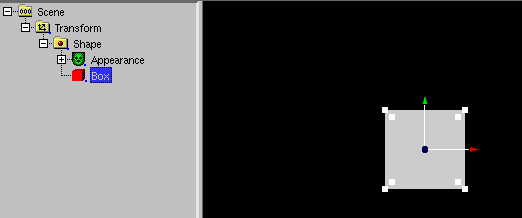
Navigate to show more faces
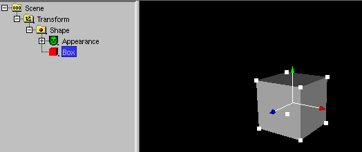
Use Change -> Change to - > IndexedFaceSet
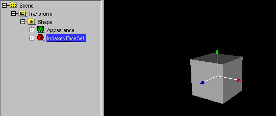
Use Selection -> Faces and select the face in z (blue) direction
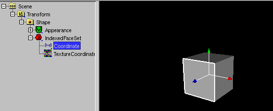
Use (IndexedFace)Set -> Inset and press OK;

Select the new face in the middle of the face.
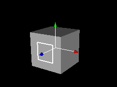
And drag it forward with the left mouse button pressed.
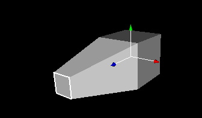
Select the backward face on the side
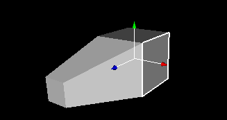
Use (IndexedFace)Set -> Inset face and press OK.
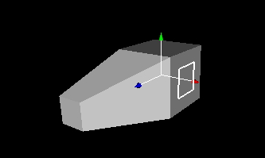
Select the lower face
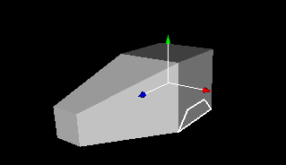
Use (IndexedFace)Set -> Extrude.
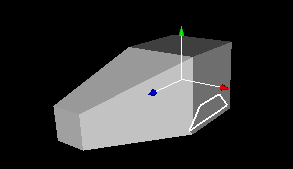
Drag the extrude face into x (red) direction.
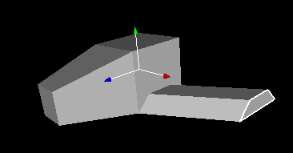
Navigate to see the plane from behind and select the backward face.
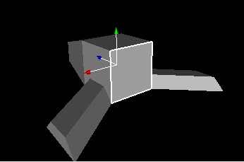
Use (IndexedFace)Set -> Inset face and Insert 0.3, the press OK.
Select the middle face.
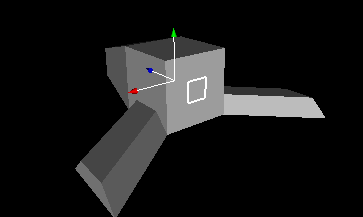
Drag the middle face backwards.
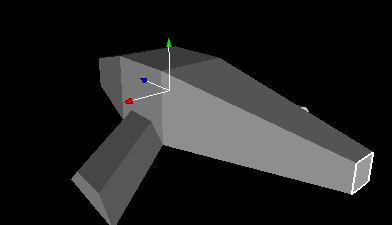
Select the backward side face.
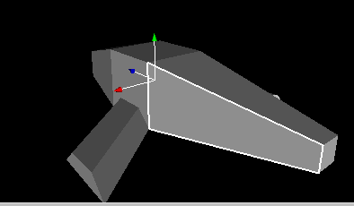
Use (IndexedFace)Set -> Inset face.

Insert 0.2, the press OK.
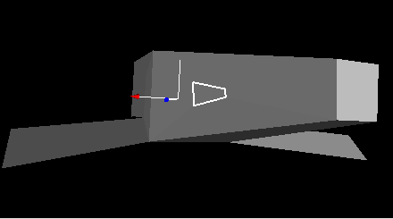
Use Movement -> z only (blue) to drag the face into the
z direction.
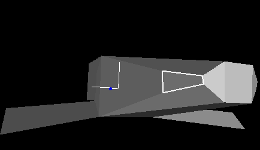
Use (IndexedFace)Set -> Extrude.
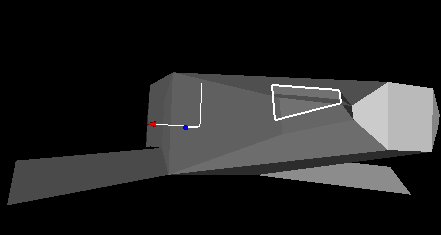
Reset Movement -> z only (blue) and
use Movement -> x only (red) to drag the face into the
x direction.
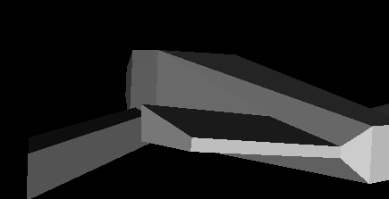
Select the upper backward face and use
(IndexedFace)Set -> Inset face insert 0.2 and press OK.
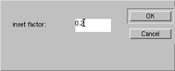
Reset Movement -> x only (red) and
use Movement -> z only (blue) and drag the face into the
z direction.
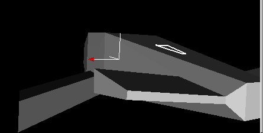
Use (IndexedFace)Set -> Extrude.
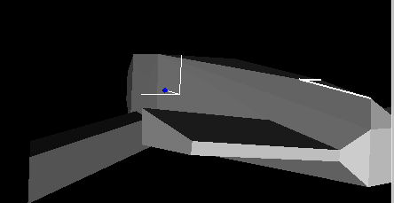
Navigate to see the new face better and
Reset Movement -> z only (blue) and
use Movement -> y only (green)
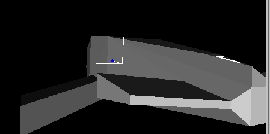
Drag the face into the y direction.
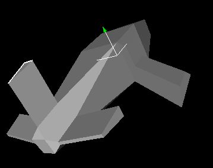
Reset Movement -> y only (green)
and use Seletion -> Lines . Select a line
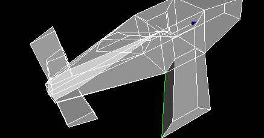
And pull it into the right direction. You may use
Movement -> x/y/z only
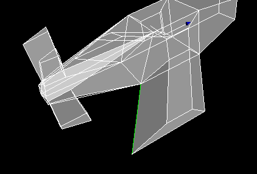
Other line...
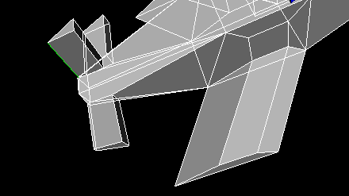
Other line...
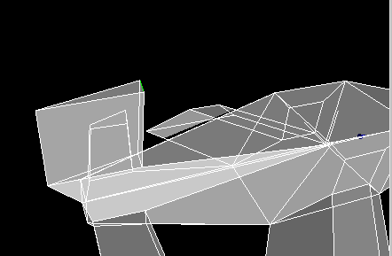
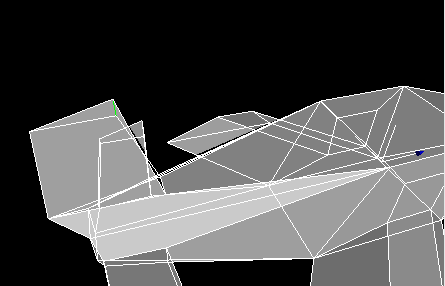
Navigate to see the object from behind and select the matching face.
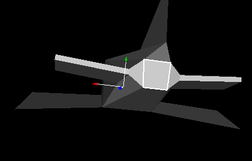
Use (IndexedFace)Set -> Extrude and drag the face into the object.
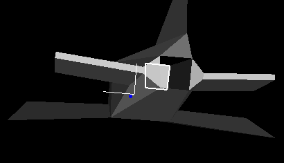
Navigate to see the object from front and select the matching face.
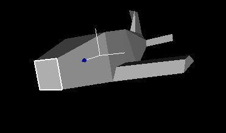
Use (IndexedFace)Set -> Extrude and drag the face into the object.
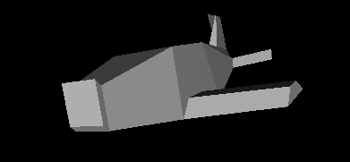
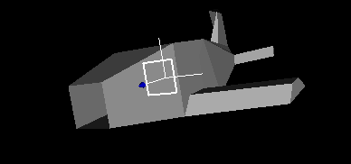
Navigation and click to the object
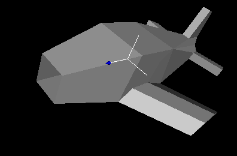
Use (IndexedFace)Set -> Subdivide.
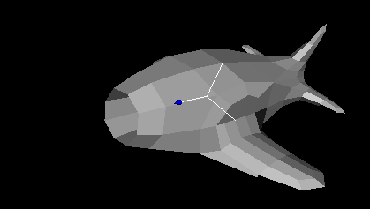
Use (IndexedFace)Set -> Subdivide.

Select the IndexedFaceSet
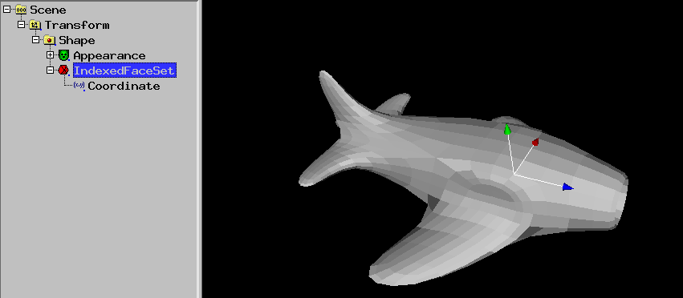
Use Change -> Show (sometimes numbers)
and increase creaseAngle. The edges of the shape are hidden.
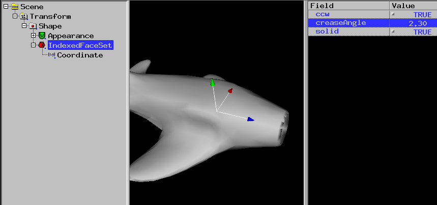
Select the Transform
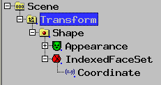
Use New -> Sphere.
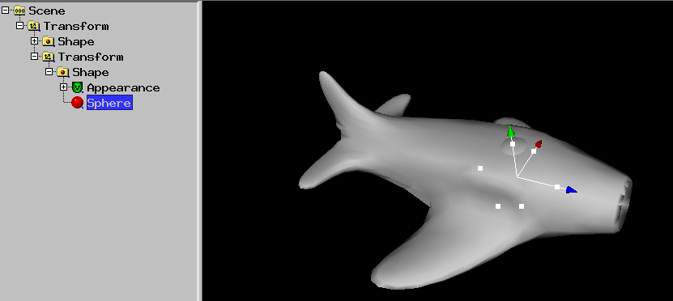
Drag the green arrow top to move the sphere.
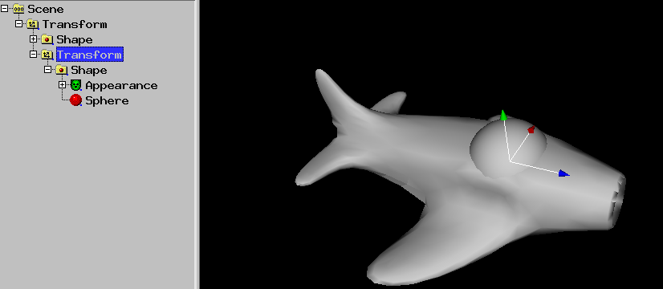
Select the Material of the sphere.
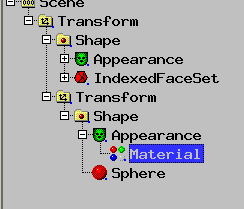
Use -Change -> Color (need Material or ...) -> Normal
and select something blue
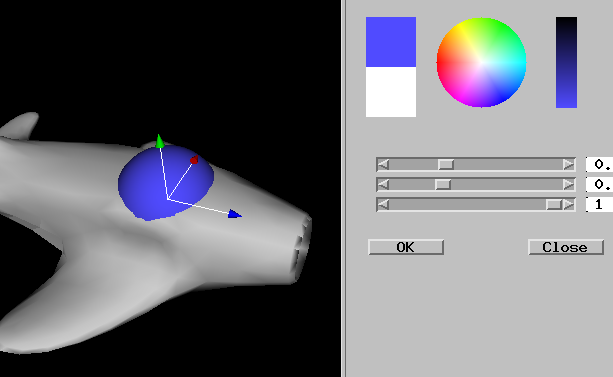
Use -Change -> Transparency.
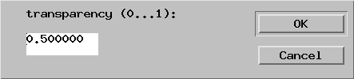
Press OK.
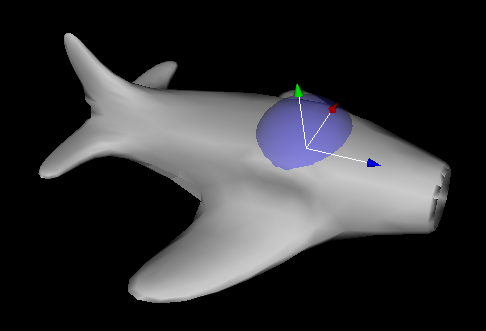
Select the Material of the IndexedFaceSet.
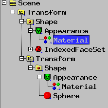
Use -Change -> Color (need Material or ...) -> Gloss
and select something white
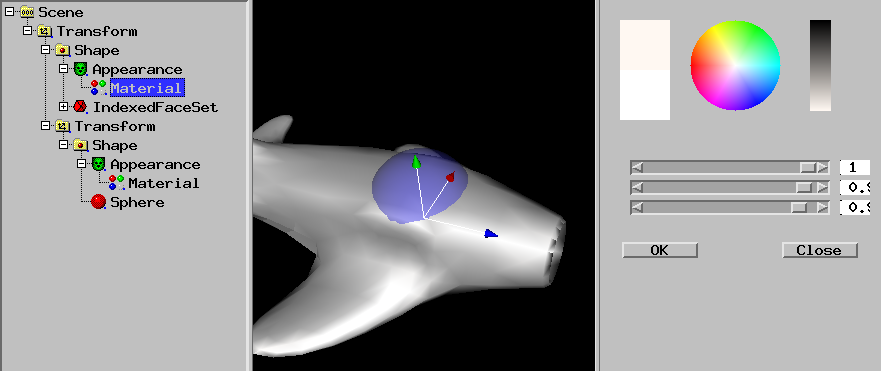
Select the Transform of the IndexedFaceSet.
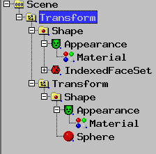
Use Animation -> Create Curve Animation (need Transform).

Click to "along Z-Axix" and press OK.
A path of the object has been created.
Select CurveAnimation1.
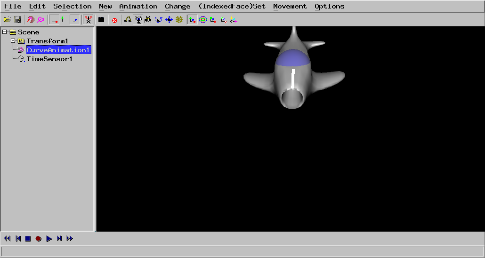
Drag the points of the path to matching places and press the triangle play
button.
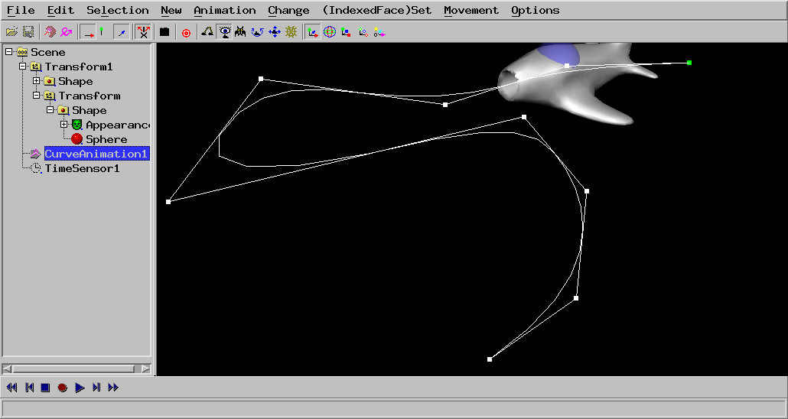